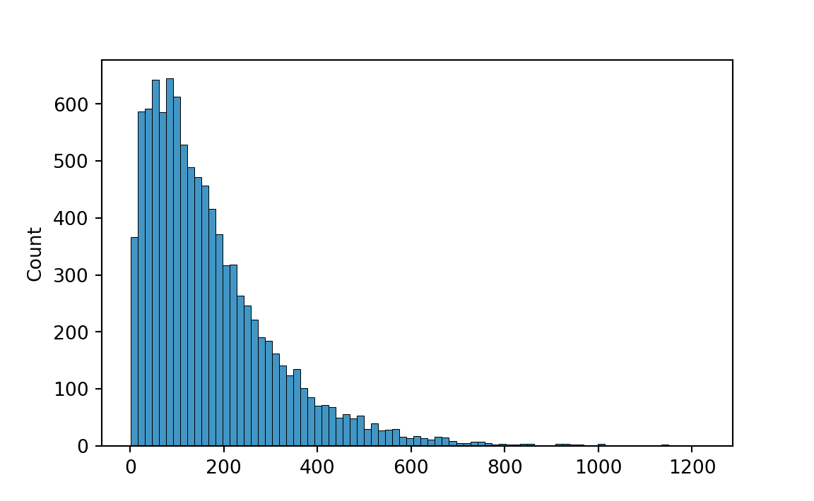

# Pandas for managing datasets
import pandas as pd
# Matplotlib for additional customization
from matplotlib import pyplot as plt
# Seaborn for plotting and styling
import seaborn as sns
from scipy import stats
import numpy as np
# Set theme
sns.set_palette("colorblind")
import os
# cwd = os.getcwd()
# print(cwd)4 Indici di posizione e di scala
L’analisi grafica esaminata in precedenza costituisce la base di partenza di qualsivoglia analisi quantitativa dei dati. Tramite opportune rappresentazioni grafiche possiamo individuare alcune caratteristiche importanti di una distribuzione: per esempio, è possibile capire se la distribuzione è simmetrica o asimmetrica; oppure se è unimodale o multimodale. Successivamente, è necessario calcolare degli indici numerici che descrivano in modo sintetico le caratteristiche di base dei dati. In questo capitolo verranno introdotti i principali indicatori della statistica descrittiva.
4.1 Indici di tendenza centrale
Tra le misure di tendenza centrale, ovvero tra gli indici che ci informano sui valori attorno ai quali sono prevalentemente concentrati i dati di un campione, quella più comunemente usata è la media.
Per un’introduzione “soft” alla nozione di tendenza centrale di una distribuzione statistica si segua il link.
4.1.1 Media
Tutti conosciamo la media aritmetica di \(\{x_1, x_2, \dots, x_n\}\), ovvero il numero reale \(\bar{x}\) definito da
\[ \begin{equation} \bar{x}=\frac{1}{n}\sum_{i=1}^n x_i. \end{equation} \tag{4.1}\]
Nella Equazione 4.1 ho usato la notazione delle sommatorie per descrivere una somma di valori. Questa notazione è molto usata in statistica e viene descritta in Appendice.
La media gode della seguente importante proprietà: la somma degli scarti tra ciascuna modalità \(x_i\) e la media aritmetica \(\bar{x}\) è nulla, cioè
\[ \begin{equation} \sum_{i=1}^n (x_i - \bar{x}) = 0.\notag \end{equation} \tag{4.2}\]
Infatti,
\[ \begin{aligned} \sum_{i=1}^n (x_i - \bar{x}) &= \sum_i x_i - \sum_i \bar{x}\notag\\ &= \sum_i x_i - n \bar{x}\notag\\ &= \sum_i x_i - \sum_i x_i = 0.\notag \end{aligned} \]
Ciò ci consente di pensare alla media come al baricentro della distribuzione.
Un’altra proprietà della media è la seguente. La somma dei quadrati degli scarti tra ciascuna modalità \(x_i\) e una costante arbitraria \(a\), cioè
\[ \begin{equation} \varphi(a) = \sum_{i=1}^n (x_i - a)^2,\notag \end{equation} \tag{4.3}\]
è minima per \(a = \bar{x}\).
Il concetto statistico di media ha suscitato molte battute. Per esempio, il fatto che, in media, ciascuno di noi ha un numero di gambe circa pari a 1.9999999. Oppure, il fatto che, in media, ciascuno di noi ha un testicolo. Ma la media ha altri problemi, oltre al fatto di ispirare battute simili alle precedenti. In particolare, dobbiamo notare che la media non è sempre l’indice che meglio rappresenta la tendenza centrale di una distribuzione. In particolare, ciò non accade quando la distribuzione è asimmetrica, o in presenza di valori anomali (outlier) – si veda il pannello di sinistra della ?fig-raincloud. In tali circostanze, la tendenza centrale della distribuzione è meglio rappresentata dalla mediana o dalla media spuntata (si veda più sotto).
Esercizio 4.1 Si calcoli la media dei valori BDI-II separatamente per ciascuno dei due gruppi di soggetti esaminati da Zetsche et al. (2019).
# Leggo i dati, seleziono le colonne appropriate, elimino i duplicati, rimuovo
# il dato mancante.
df = pd.read_csv('data/data.mood.csv',index_col=0)
df = df[['esm_id','group','bdi']]
df = df.drop_duplicates(keep='first')
df = df[pd.notnull(df['bdi'])]
# Trovo le medie dei valori BDI-II dei due gruppi.
df.groupby('group')['bdi'].describe().round(1)
#> count mean std min 25% 50% 75% max
#> group
#> ctl 36.0 1.6 2.7 0.0 0.0 1.0 2.0 12.0
#> mdd 30.0 30.9 6.6 19.0 26.0 30.0 35.0 44.04.1.2 Media spuntata
La media spuntata \(\bar{x}_t\) (trimmed mean) non è altro che la media dei dati calcolata considerando solo il 90% (o altra percentuale) dei dati centrali. Per calcolare \(\bar{x}_t\) si ordinando i dati secondo una sequenza crescente, \(x_1 \leq x_2 \leq x_3 \leq \dots \leq x_n\), per poi eliminare il primo 5% e l’ultimo 5% dei dati della serie così ordinata. La media spuntata è data dalla media aritmetica dei dati rimanenti.
Esercizio 4.2 Si calcoli la media spuntata dei valori BDI-II per i due gruppi di soggetti esaminati da Zetsche et al. (2019) escludendo il 10% dei valori più estremi.
Iniziamo ad esaminare la numerosità di ciascun gruppo.
df.groupby("group").size()
#> group
#> ctl 36
#> mdd 30
#> dtype: int64Possiamo selezionare i dati del gruppo mdd nel modo seguente.
df[df["group"]=='mdd']
#> esm_id group bdi
#> 1 10 mdd 25.0
#> 15 9 mdd 30.0
#> 30 6 mdd 26.0
#> 46 7 mdd 35.0
#> 65 12 mdd 44.0
#> 83 16 mdd 30.0
#> 100 21 mdd 22.0
#> 119 18 mdd 33.0
#> 136 20 mdd 43.0
#> 151 22 mdd 43.0
#> 171 23 mdd 24.0
#> 191 25 mdd 39.0
#> 211 24 mdd 19.0
#> 283 31 mdd 25.0
#> 338 30 mdd 31.0
#> 358 37 mdd 28.0
#> 525 48 mdd 30.0
#> 561 45 mdd 35.0
#> 646 55 mdd 31.0
#> 666 50 mdd 26.0
#> 795 63 mdd 36.0
#> 811 62 mdd 41.0
#> 827 65 mdd 26.0
#> 846 66 mdd 35.0
#> 864 68 mdd 33.0
#> 903 78 mdd 28.0
#> 933 80 mdd 27.0
#> 953 81 mdd 34.0
#> 964 85 mdd 22.0
#> 981 84 mdd 27.0Calcoliamo ora la media spuntata dei due gruppi.
bdi_mdd = df[df["group"]=='mdd'].bdi
stats.trim_mean(bdi_mdd, 0.10)
#> 30.625
bdi_ctl = df[df["group"]=='ctl'].bdi
stats.trim_mean(bdi_ctl, 0.10)
#> 1.04.1.3 Moda e mediana
In precedenza abbiamo già incontrato altri due popolari indici di tendenza centrale: la moda (Mo), ovvero il valore centrale della classe con la frequenza massima (può succedere che una distribuzione abbia più mode; in tal caso si dice multimodale e questo operatore perde il suo significato di indice di tendenza centrale) e la mediana \(\tilde{x}\).
Esercizio 4.3 Si calcolino i quantili di ordine 0.25, 0.5 e 0.75 dei valori BDI-II per i due gruppi di soggetti di Zetsche et al. (2019).
#create functions to calculate 0.10 and 0.90 quantiles
def q1(x):
return x.quantile(0.10)
def q3(x):
return x.quantile(0.90)
#calculate quantiles by group
vals = {'bdi': [q1, q3]}
df.groupby('group').agg(vals)
#> bdi
#> q1 q3
#> group
#> ctl 0.0 4.0
#> mdd 23.8 41.2Si noti che solitamente i software restituiscono un valore interpolato del \(p\)-esimo quantile \(q_p\) \((0 < p < 1)\), il quale viene calcolato mediante specifiche procedure. Il risultato fornito dai software, dunque, non sarà identico a quello trovato utilizzando la definizione non interpolata di quantile che abbiamo presentato in precedenza. Se, per qualche ragione, vogliamo conoscere l’algoritmo usato per la determinazione dei quantili interpolati, dobbiamo leggere la documentazione del software.
4.2 Indici di dispersione
Le medie e gli indici di posizione descritti in precedenza forniscono delle sintesi dei dati che mettono in evidenza la tendenza centrale delle osservazioni. Tali indici, tuttavia, non considerano un aspetto importante della distribuzione dei dati, ovvero la variabilità dei valori numerici della variabile statistica. È dunque necessario sintetizzare la distribuzione di una variabile statistica oltre che con le misure di posizione anche tramite l’utilizzo di indicatori che valutino la dispersione delle unità statistice.
Per un’introduzione “soft” al tema degli indici di dispersione si segua il link.
4.2.1 Indici basati sull’ordinamento dei dati
È possibile calcolare degli indici di variabilità basati sull’ordinamento dei dati. L’indice più ovvio è l’intervallo di variazione, ovvero la distanza tra il valore massimo e il valore minimo di una distribuzione di modalità, mentre in precedenza abbiamo già incontrato la differenza interquartile. Questi due indici, però, hanno il limite di essere calcolati sulla base di due soli valori della distribuzione (\(x_{\text{max}}\) e \(x_{\text{min}}\), oppure \(x_{0.25}\) e \(x_{0.75}\)). Pertanto non utilizzano tutte le informazioni che sono disponibili. Inoltre, l’intervallo di variazione ha il limite di essere pesantemente influenzato dalla presenza di valori anomali.
4.2.2 Varianza
Dati i limiti delle statistiche precedenti è più comune misurare la variabilità di una variabile statistica come la dispersione dei dati attorno ad un indice di tendenza centrale. Infatti, la misura di variabilità di gran lunga più usata per valutare la variabilità di una variabile statistica è senza dubbio la varianza. La varianza
\[ \begin{equation} S^2 = \frac{1}{n} \sum_{i=1}^n (x_i - \bar{x})^2 \end{equation} \tag{4.4}\]
è la media dei quadrati degli scarti \(x_i - \bar{x}\) tra ogni valore e la media della distribuzione.
La varianza è una misura di dispersione più complessa di quelle esaminate in precedenza. È appropriata solo nel caso di distribuzioni simmetriche e, anch’essa, è fortemente influenzata dai valori anomali. Inoltre, è espressa in un’unità di misura che è il quadrato dell’unità di misura dei dati originari e quindi ad essa non può essere assegnata un’interpretazione intuitiva.
Esercizio 4.4 Si calcoli la varianza dei valori BDI-II per i dati di Zetsche et al. (2019).
Applicando la formula precedente, per tutto il campione abbiamo
var_bdi = sum((df.bdi - np.mean(df.bdi))**2) / len(df.bdi)
round(var_bdi, 4)
#> 236.2388Possiamo anche usare le funzioni di numpy.
var_bdi = np.var(df.bdi)
round(var_bdi, 4)
#> 236.23884.2.2.1 Stima della varianza della popolazione
Si noti il denominatore della formula della varianza. Nell’Equazione 4.4 ho usato \(n\) (l’ampiezza campionaria, ovvero il numero di osservazioni del campione). In questo modo ottengo la varianza quale statistica descrittiva del campione. In alternativa, è possibile usare \(n-1\) al denominatore:
\[ \begin{equation} s^2 = \frac{1}{n-1} \sum_{i=1}^n (x_i - \bar{x})^2 \end{equation} \tag{4.5}\]
In questo secondo modo si trova la varianza quale stimatore della varianza della popolazione. Si può dimostrare che l’Equazione 4.5 fornisce una stima corretta (ovvero, non distorta) della varianza della popolazione da cui abbiamo ottenuto il campione, mentre invece la Equazione 4.4 fornisce (in media) una stima troppo piccola della varianza della popolazione. Si presti attenzione alla notazione: \(S^2\) per la varianza quale statistica descrittiva, \(s^2\) per la varianza quale stimatore.
Esercizio 4.5 Per illustrare il punto precedente svolgiamo una simulazione.
import random
import numpy as np
import matplotlib.pyplot as plt
import seaborn as snsEstraggo un campione casuale di 10 osservazioni dalla popolazione del quoziente di intelligenza.
x = np.random.normal(loc = 100, scale = 15, size = 10)
print(x)
#> [ 81.17070624 100.35069264 68.1950899 57.96551529 90.15808424
#> 125.61104223 110.79690116 113.22592754 92.61442233 96.89704775]Calcolo la varianza con \(n\) al denominatore. Si noti che la “vera” varianza del quoziente di intelligenza è \(15^2\) = 225.
np.var(x)
#> 384.4493983096239Consideriamo ora 10 campioni casuali del QI.
loc = 100
scale = 15
size = 4
niter = 10
random_samples = []
for i in range(niter):
one_sample = np.random.normal(loc, scale, size)
random_samples.append(one_sample)Il primo campione è
random_samples[0]
#> array([85.53870397, 91.09826595, 79.48383929, 98.6820146 ])Il decimo campione è
random_samples[9]
#> array([ 96.9281537 , 101.48833754, 97.02814599, 99.87664806])Stampiamo tutti e 10 i campioni.
rs = np.array(random_samples)
rs
#> array([[ 85.53870397, 91.09826595, 79.48383929, 98.6820146 ],
#> [119.09265717, 86.67387284, 95.02799371, 56.46242066],
#> [103.12802245, 103.13909694, 112.15934503, 95.8227122 ],
#> [ 97.59083982, 67.1746377 , 105.20100163, 108.06586713],
#> [111.90171046, 102.71742144, 96.36614998, 104.02118416],
#> [ 94.93411727, 108.00656212, 111.37636944, 97.44631896],
#> [107.73941918, 123.04392679, 111.77922494, 115.09265642],
#> [ 95.87590295, 86.82367216, 90.00344021, 97.0524578 ],
#> [103.70110958, 82.89416431, 83.35520427, 77.78202689],
#> [ 96.9281537 , 101.48833754, 97.02814599, 99.87664806]])Per ciascun campione (ovvero, per ciascuna riga della matrice precedente), calcoliamo la varianza usando \(n\) al denominatore. Otteniamo così 10 stime della varianza della popolazione del QI.
x_var = np.var(rs, axis=1) # applichiamo la funzione su ciascuna riga
print(x_var)
#> [ 50.080926 501.4036708 33.5445251 263.69316018 30.52784334
#> 47.77926698 31.60706991 17.64003824 98.50565593 3.75648187]Ripetiamo ora la simulazione usando un numero di iterazioni maggiore.
loc = 100
scale = 15
size = 4
niter = 10000
random_samples = []
for i in range(niter):
one_sample = np.random.normal(loc, scale, size)
random_samples.append(one_sample)
rs = np.array(random_samples)
x_var = np.var(rs, axis=1)Esaminiamo la distribuzione dei valori ottenuti.
sns.histplot(x_var)
La stima più verosimile della varianza del QI è dato dalla media di questa distribuzione.
np.mean(x_var)
#> 170.9802825174357Si noti che il valore medio della stima della varianza ottenuta con l’Equazione 4.4 è troppo piccolo rispetto al valore corretto di \(15^2 = 225\).
Ripeto ora la simulazione usando la formula della varianza con \(n-1\) al denominatore.
random.seed(2023)
loc = 100
scale = 15
size = 4
niter = 10000
random_samples = []
for i in range(niter):
one_sample = np.random.normal(loc, scale, size)
random_samples.append(one_sample)
rs = np.array(random_samples)
x_var = np.var(rs, ddof=1, axis=1)
np.mean(x_var)
#> 223.3573010872812In questo secondo caso, il valore atteso della stima della varianza trovata con \(n-1\) al denominatore è molto simile al valore corretto di 225.
4.2.3 Precisione
Si definisce precisione l’inverso della varianza:
\[ \begin{equation} \tau = \frac{1}{\sigma^2}. \end{equation} \tag{4.6}\]
Alcuni ritengono che la precisione sia più “intuitiva” della varianza perché dice quanto sono concentrati i valori attorno alla media piuttosto che quanto sono dispersi. In altri termini, si potrebbe argomentare che siamo più interessati a quanto sia precisa una misurazione piuttosto che a quanto sia imprecisa. Più sono dispersi i valori attorno alla media (alta varianza), meno sono precisi (poca precisione); minore è la varianza, maggiore è la precisione.
La precisione è uno dei due parametri naturali della distribuzione gaussiana. Nei termini della Equazione 4.6, la distribuzione gaussiana (si veda il Capitolo (distr-rv-cont?)) può essere espressa nel modo seguente
\[ {\displaystyle f(y)=\sqrt{\frac{\tau}{2\pi}} e^{-{\frac {1}{2}}\tau\left({y-\mu }\right)^{2}}}, \]
anziché come
\[ {\displaystyle f(y)={\frac {1}{\sigma {\sqrt {2\pi }}}}e^{-{\frac {1}{2}}\left({\frac {y-\mu }{\sigma }}\right)^{2}}}. \]
4.2.4 Deviazione standard
Dato che l’unità di misura della varianza coincide con il quadrato dell’unità di misura dei dati, la varianza è difficile da interpretare. Questo problema si può risolvere prendendo la radice quadrata della varianza, ottenendo così una misura espressa nell’unità di misura originaria dei dati. Una tale misura si chiama deviazione standard (o scarto quadratico medio, o scarto tipo)1:
\[ s^2 = \sqrt{(n-1)^{-1} \sum_{i=1}^n (x_i - \bar{x})^2} \tag{4.7}\]
Quando tutte le osservazioni sono uguali, \(s = 0\), altrimenti \(s > 0\).
Come nel caso della varianza, anche la deviazione standard \(s\) dovrebbe essere usata soltanto quando la media è adeguata per descrivere il centro della distribuzione, ovvero, nel caso di distribuzioni simmetriche. Come nel caso della media \(\bar{x}\), anche la deviazione standard è fortemente influenzata dai dati anomali, ovvero dalla presenza di uno o di pochi dati che sono molto più distanti dalla media rispetto agli altri valori della distribuzione.
Esercizio 4.6 Si calcoli la deviazione standard per i valori BDI-II del campione di Zetsche et al. (2019).
Applicando l’Equazione 4.7, per tutto il campione abbiamo
np.std(df.bdi)
#> 15.370060219395436Per ciascun gruppo, abbiamo:
df.groupby('group')['bdi'].std()
#> group
#> ctl 2.707427
#> mdd 6.606858
#> Name: bdi, dtype: float644.2.4.1 Interpretazione
Alla deviazione standard può essere assegnata una semplice interpretazione: la deviazione standard è simile (ma non identica) allo scarto semplice medio campionario, ovvero alla media aritmetica dei valori assoluti degli scarti dalla media. La deviazione standard ci dice, dunque, quanto sono distanti, in media, le singole osservazioni dal centro della distribuzione. Un’interpretazione più precisa del significato dello scarto tipo è fornita nel paragrafo successivo.
Esercizio 4.7 Si verifichi l’interpretazione della deviazione standard fornita sopra usando i valori BDI-II del campione di Zetsche et al. (2019).
Per questi dati la deviazione standard è
np.std(df.bdi)
#> 15.370060219395436Lo scarto semplice medio campionario è
np.mean(np.abs(df.bdi - np.mean(df.bdi)))
#> 14.5399449035812694.2.5 Deviazione mediana assoluta
Una misura robusta della dispersione statistica di un campione è la deviazione mediana assoluta (Median Absolute Deviation, MAD) definita come la mediana del valore assoluto delle deviazioni dei dati dalla mediana, ovvero:
\[ {\displaystyle \operatorname {MAD} =\operatorname {median} \left(\ \left|X_{i}-\operatorname {median} (X)\right|\ \right)} \tag{4.8}\]
Nel caso di una distribuzione dei dati unimodale simmetrica di forma campanulare (ovvero, normale) si ha che
\[ {\displaystyle \text{deviazione standard} \approx 1.4826\ \operatorname {MAD} .\,} \]
Pertanto, solitamente i software restituiscono il valore MAD moltiplicato per una tale costante.
Esercizio 4.8 I dati di Zetsche et al. (2019) seguono una distribuzione bimodale, per cui il vincolo precedente non si applica. Verifichiamo dunque il principio precedente usando un campione di dati estratto da una popolazione normale.
x = np.random.normal(loc=100, scale=15, size=10000)
1.4826 * np.median(np.abs(x - np.median(x)))
#> 14.9122938042115954.2.6 Indici di variabilità relativi
A volte può essere interessante effettuare un confronto fra due misure di variabilità di grandezze incommensurabili, ovvero di caratteri rilevati mediante differenti unità di misura. In questi casi, le misure di variabilità precedentemente descritte si rivelano inadeguate in quanto dipendono dall’unità di misura adottata. Diventa dunque necessario ricorrere a particolari numeri adimensionali detti indici relativi di variabilità. Il più importante di tali indici è il coefficiente di variazione, ovvero il numero puro
\[ C_v = \frac{\sigma}{\bar{x}} \tag{4.9}\]
ottenuto dal rapporto tra la deviazione standard e la media dei dati.
Un altro indice relativo di variabilità è la differenza interquartile rapportata al primo quartile, oppure al terzo quartile, oppure alla mediana, cioè:
\[ \frac{x_{0.75} - x_{0.25}}{x_{0.25}}, \qquad \frac{x_{0.75} - x_{0.25}}{x_{0.75}}, \qquad \frac{x_{0.75} - x_{0.25}}{x_{0.50}}. \]
Commenti e considerazioni finali
Le statistiche descrittive ci forniscono degli indici sintetici che riassumono i dati, ovvero le nostre misurazioni dell’intera popolazione o di un campione estratto da una popolazione. Le statistiche descrittive comprendono gli indici di tendenza centrale e gli indici di dispersione. Gli indici di tendenza centrale includono la media, la mediana e la moda, mentre gli indici di dispersione includono la deviazione standard, la varianza, la curtosi e l’asimmetria (questi ultimi due indici sono definiti in relazione alla distribuzione Normale e verranno dunque discussi in quel contesto).
Il termine standard deviation è stato introdotto in statistica da Pearson nel 1894 assieme alla lettera greca \(\sigma\) che lo rappresenta. Il termine italiano “deviazione standard” ne è la traduzione più utilizzata nel linguaggio comune; il termine dell’Ente Nazionale Italiano di Unificazione è tuttavia “scarto tipo”, definito come la radice quadrata positiva della varianza.↩︎